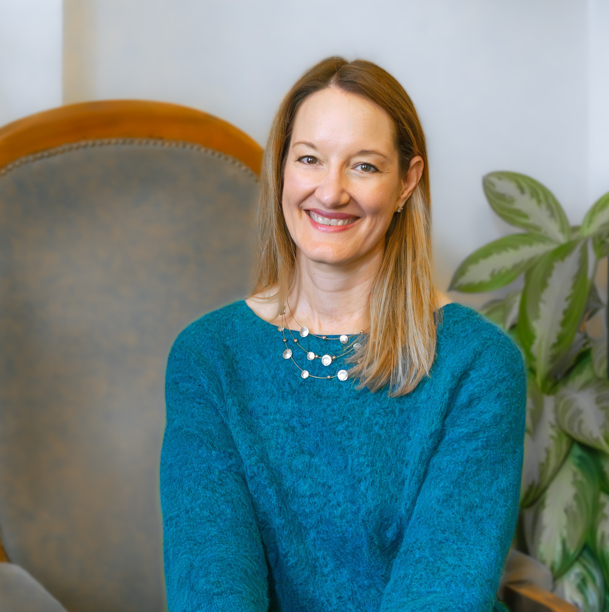

My Story
I grew up believing in the American dream.
Work hard. Get a good job. Follow the path. Be happy.
So that's what I did. I studied hard, got my degree, and landed a corporate job in Washington, D.C. - the kind of job people were supposed to want. On paper, I had the perfect life. But I was not happy. I was so desperate to escape that I actually tried to plan my own kidnapping just to get out of having to go to work.
That realization was the beginning of everything. I stopped following someone else's script and started writing my own. I left the United States, traveled for a year, and eventually settled in the south of France, where I earned an MBA, learned a new language, fell in love, and became a French citizen. I have two binational kids and a life that feels like it belongs to me in a way that D.C. corporate life never did.
But the deeper work - the real work - came later.
COVID nearly broke my family. What the world experienced as a global crisis, I experienced as a personal reckoning. Everything I thought I'd figured out got pressure-tested, and a lot of it cracked. When I realized my marriage was on the brink of falling apart, I also realized something that stopped me cold: financially, I would be ruined. I felt completely trapped.
That fear became fuel. I did the deep work on myself that I had been putting off - and it saved my marriage. It also put me on a path to more financial abundance than I could have imagined possible. I didn't arrive at this work from a place of having it all figured out. I arrived from the wreckage of a life that had to fall apart before I could build something real.
What I believe, at my core, is this: Financial independence is not a nice-to-have for women. It is the foundation of our freedom.
Throughout history, women were not free - and that wasn't an accident. Financial dependence was the mechanism of our control. When we build financial stability for ourselves, we are not just managing money. We are reclaiming something that was taken from us. We are choosing ourselves.
That belief drives everything I do.
I am a certified NLP life coach, trained in CBT, EFT, and somatic practices. I am a voracious reader, a published author (Tune In & Dial Out: How to Win at B2B Cold Calling), and a contributor to HuffPost.
I also do standup comedy.
Not because I want to be famous. Not because I'm trying to make money at it. I started getting on stage for one reason: to prove to myself that I could do hard things. And it worked. Comedy taught me to find the humor inside the painful parts of life, to get over my fear of rejection, and to show up fully present with zero expectations. Every single one of those lessons lives in my coaching work too.
My personal development journey has not been easy. But it has been extraordinary. And it has led me to one unshakeable belief about myself: the Universe has my back.
That faith - in something bigger, in the law of attraction, in the idea that we are all capable of more than we can currently imagine - is what I want to give the women I work with. Not just a strategy for making money. An unshakeable foundation rooted in self-worth and confidence.
Because when you have that, everything else becomes possible.